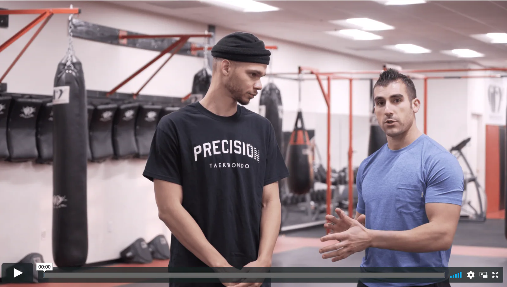
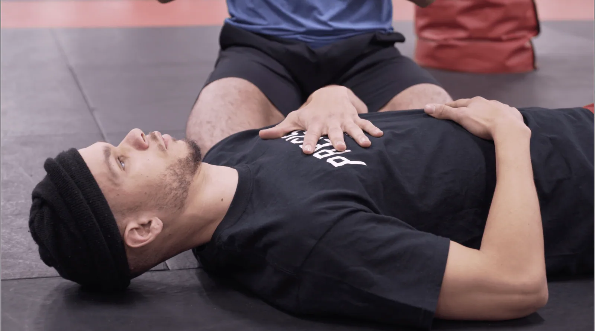

B97 · Breathing reset
Hi {first_name},
In last week’s email, the focus was placed on an energizing workout-work in combo designed to increase your health and vitality. I hope you loved trying it out!
Now, if it’s one element that relates closely to both working out and working in, it is this week’s topic on breathing.
Breathing is a critical factor in building health and high performance. With proper breathing, we can energize the body, remove toxins, pump the discs of the spine, and much more.
Although there are many breathing strategies, each with a specific purpose and intent, the one I will discuss here is that of a more natural, relaxed breathing rhythm. With it, we aim to activate the parasympathetic nervous system - responsible for rest, repair, and digestion functions in the body.

In this video, former USA Taekwondo National Team Member, TJ Curry, meets up with me in the gym. We touch on various aspects related to the mechanics of breathing, specifically focused around the diaphragm - a key respiratory and spinal stabilizing muscle.
Additional note on performance - the middle back (thoracic spine) plays a significant role in healthy shoulder function during overhead lifting. Faulty breathing, which can be coupled with a stiff middle spine, can negatively impact overhead movements. Retrain your breathing, and you may likely see a surprising improvement in these lifts as a result.
Helpful Tips:
If you are having difficulty performing a quality, effortless inhalation-exhalation cycle in the standing position, I suggest taking your time with the following sequence below.
Progressions

Do this daily and spend 3-7 days working through each progression. I suggest 20-30 slow breaths for approximately 4 seconds on inhalation, and 4 seconds on exhalation when starting out.
I hope you enjoyed today’s email on breathing. By retraining your breathing rhythm in this way, not only will your stress levels reduce, energy increase, but also your deep core muscles will be primed for all your loaded lifting movements.
Wishing you a wonderful day! Mike
P.S. Last week I shared a neat gift with you - a downloadable PDF plus 10+ minute instructional video titled, “3 Biggest Kettlebell Snatch Mistakes.” In case you missed it, click here. Once you grab yours, you’ll also be notified of the upcoming release of my new Kettlebell Lifestyle workout program! : )))
Resources: 1. Calais-Germain, Blandine. Anatomy of Breathing, Eastland Press, Inc. 2006 2. CHEK Institute and Dan Hellman. Heavy Breathing -The Science and Practice of Respiration During Resistance Training, IDEA Personal Training Institute, Feb. 25-28, 2010
|